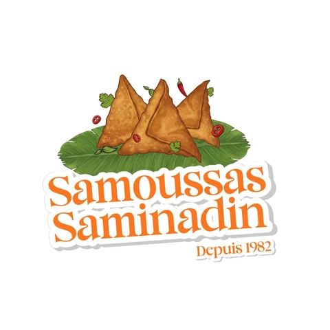
Samoussas poisson, poulet, légume, surimi ou fromage, bonbons piment et beignets : pour les particuliers comme pour les professionnels.
Rue de l'Est, au Port, Samoussas Saminadin prépare ses samoussas depuis 1982. Une pâte artisanale et un goût lontan : pour régaler particuliers et professionnels depuis plus de quarante ans.
Bien remplis, bien croustillants, au poisson, au poulet, aux légumes, au surimi ou au fromage : à croquer à l'apéritif, à partager en famille ou à servir à tous vos invités.
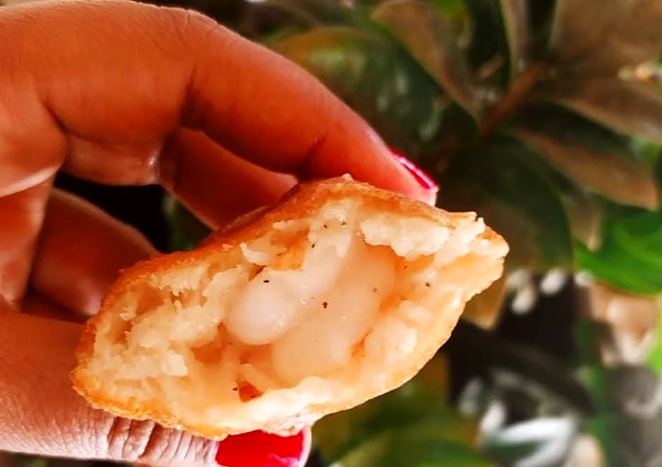
Bien rempli, bien croustillantLe menu épinglé sur notre page, avec nos spécialités préparées pour vos petites faims comme pour vos grands événements.
Le cœur de la maison : poisson, poulet, légume, surimi ou fromage, à la pâte artisanale.
Les petits ronds dorés qu'on adore à l'apéritif.
Une gourmandise de plus pour vos plateaux.
Pour celles et ceux qui aiment quand ça pique.
Deux classiques réunionnais de la friture.
Pour compléter votre plateau apéritif.
Menu publié sur la page Facebook Samoussas Saminadin.
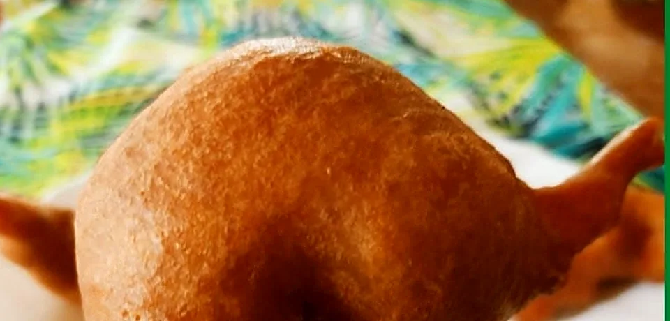
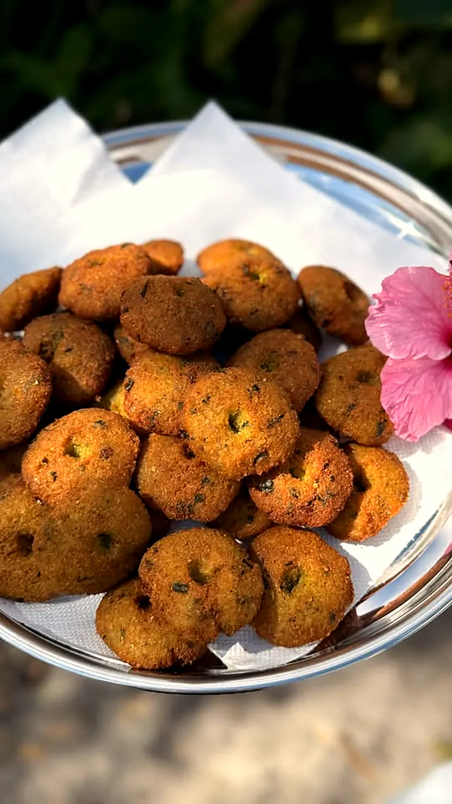
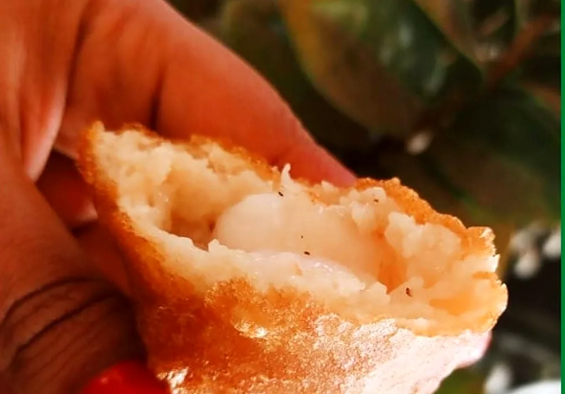
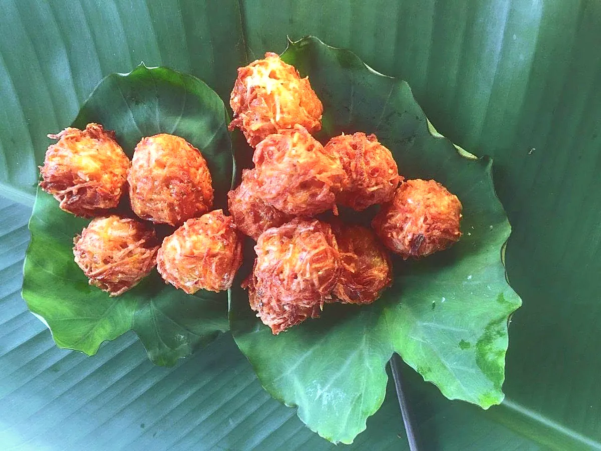
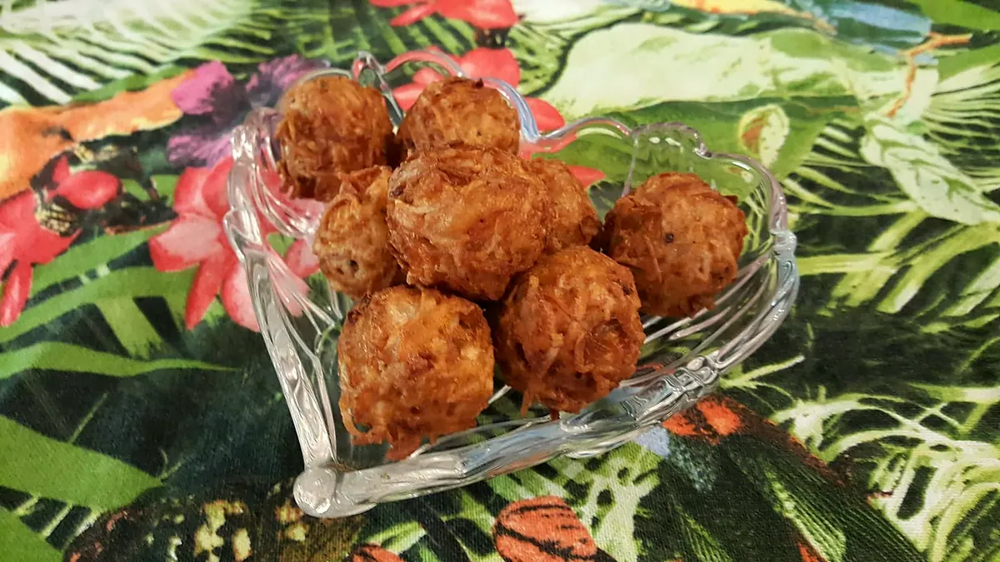
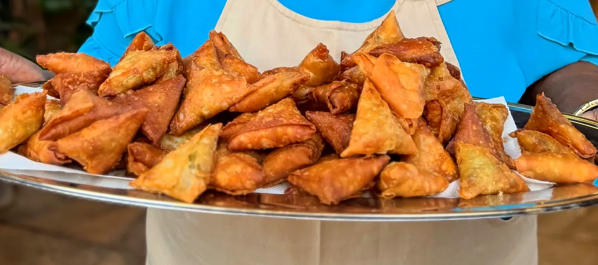
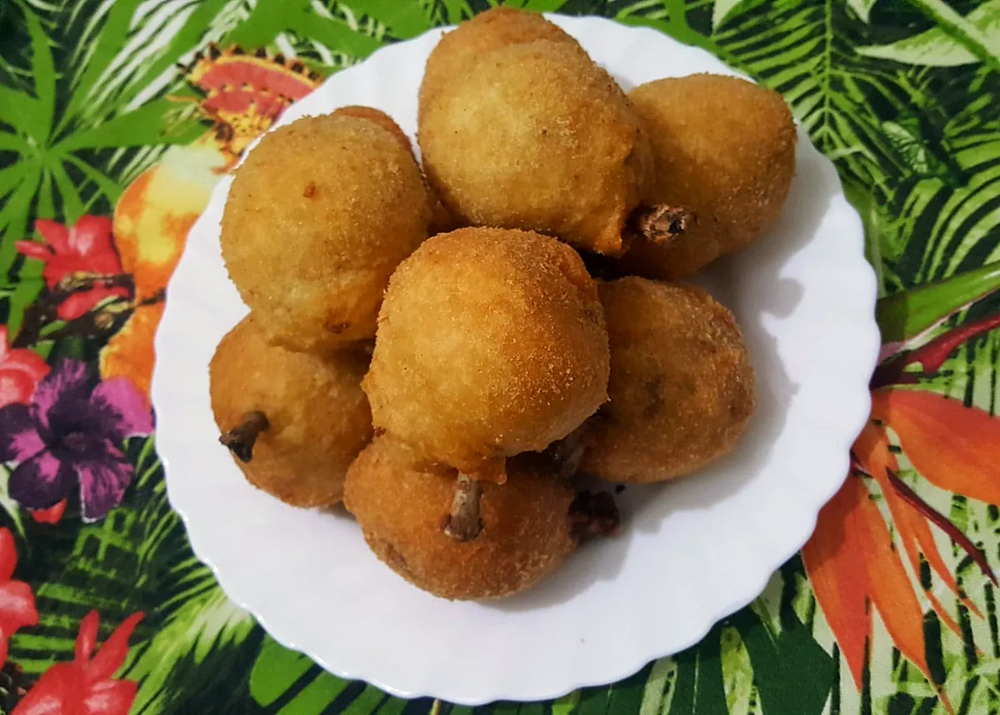
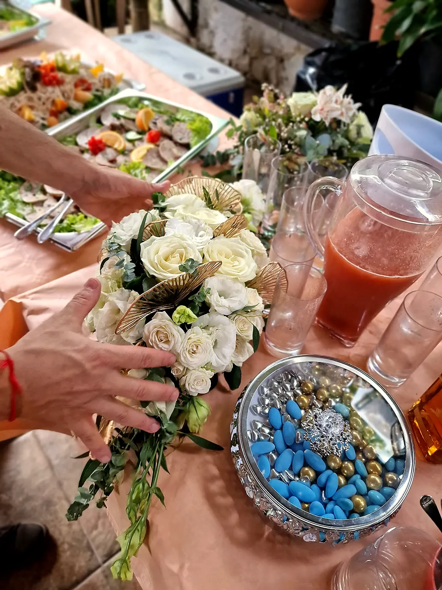
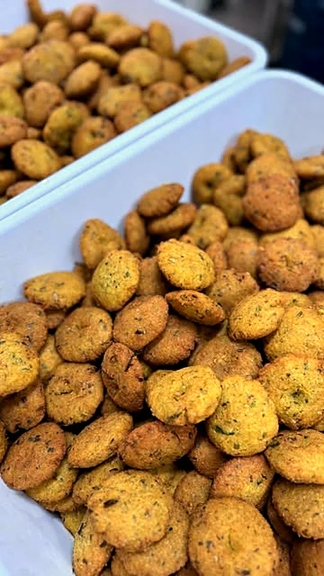
← Faites glisser pour voir plus →
Livraison pour vos événements dès 800 pièces ; sinon, retrait sur place, rue de l'Est.
« Samoussas au top, bien remplis et très croustillants ☺️ et quand on demande avec du piment on sent vraiment le piment. Sans parler des beignets crevettes ou bonbon piment ☺️🥰🥰 »
Laurenza M., avis Google, visite en mai
« Meilleurs samoussa pour moi surtout celui au poisson et poulet un délice 🤤 Je recommande à 1000% 😊 »
Anne Severine S., avis Google, visite en septembre 2025
« Commandez vos samoussas pour fête des mères, communions, baptêmes, mariages. Le menu épinglé sur nout profil ! »
Publication Facebook du 28 mai 2026 · plus de 330 réactionsPour le réveillon en famille, l'apéritif de fin d'année au bureau ou le repas du 25 : commandez vos samoussas, bonbons piment et beignets pour les fêtes. Pour les très grosses commandes, pensez à prévoir une semaine.
💬 Commander pour les fêtesOu par téléphone au 0692 88 32 81
| Lundi – vendredi | 8h – 17h |
| Samedi | 8h – 12h |